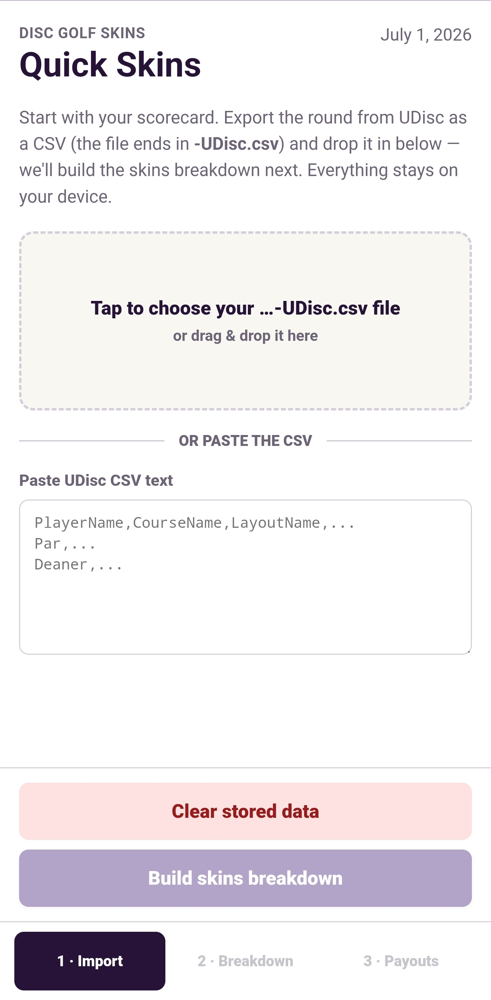
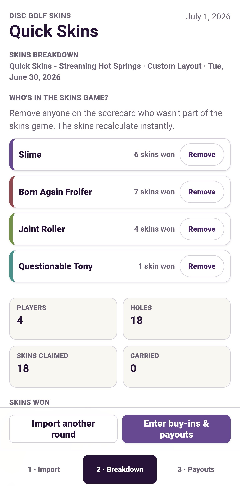
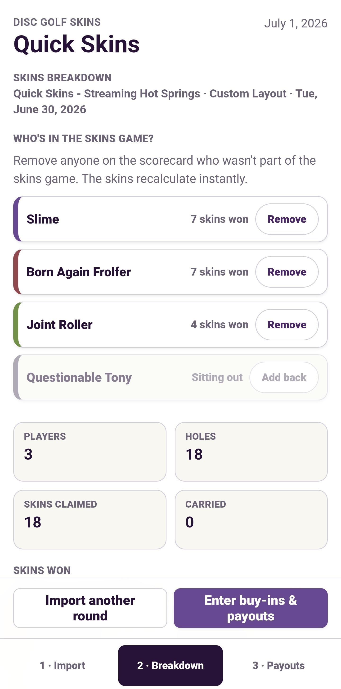
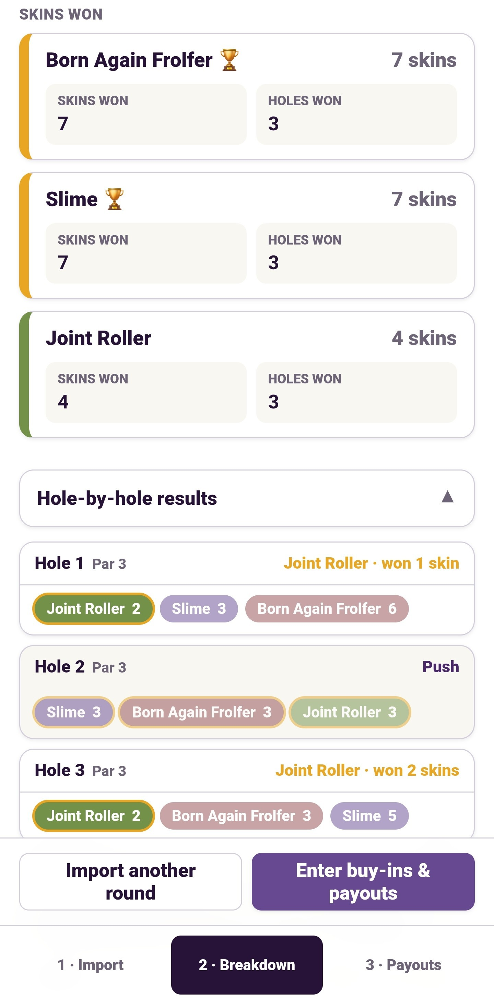
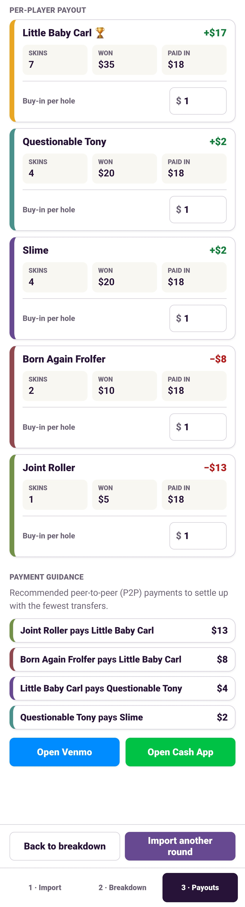

Disc golf skins, made quick
Install it once like a real app — no App Store, no account — then import a UDisc round to see instant skins payouts on the course.
Pick your device.
Tap the button — your browser will handle the rest. On iPhone/iPad, follow the Safari steps above instead.
Looks like you're already using the installed app. Nice — no extra steps needed.
Click on the Round Menu (top right) and select Export to CSV.
For most phones, share directly from UDisc to Quick Skins.
Otherwise you can save the file for in-app upload.
Immediately get a breakdown for who won how many skins.
Review hole by hole breakdowns or skip ahead to payouts.





No store needed. Quick Skins is a website that installs like an app (a "PWA"). Add it to your home screen once and it opens full-screen, just like any other app icon.
Once you've installed it and opened it at least once, it keeps working offline.
Yes — no sign-up, no subscription.
Yes — no referral link or anything.